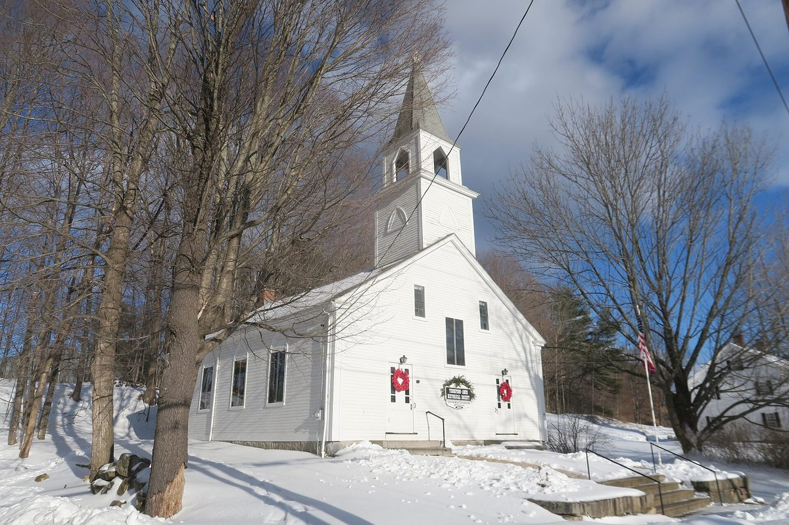

미국 뉴햄프셔 길퍼드 주민 에너지위원회, 새 공공사업소 지붕에 태양광 패널 339장 제안…업체 비공식 추산 40만 달러, 세액공제 40% 받으면 24만 달러

주민총회 표결로 생긴 위원회, 세 건물 가운데 공공사업소가 가장 알맞다고 보고…단순 회수 8년은 업체 분석, 이사회는 지붕·장래 비용 걱정에 여러 업체 견적 비교 주문, 최종 결정은 주민총회 투표
미국 뉴햄프셔주 길퍼드(Gilford) 타운의 에너지위원회가 지난달 28일(현지시간) 타운 이사회에 거의 완공된 새 공공사업소 건물 지붕에 태양광 패널 339장을 다는 안을 보고했다. 주민총회(Town Meeting) 표결로 생긴 이 위원회는 설립 안건에 새 공공사업소 태양광 검토가 들어 있었고, 한 태양광 업체가 무료로 현장을 둘러본 뒤 비용을 40만 달러로 어림했다. 레나 너크(Lena Nirk) 위원장은 공공건물 태양광에 주는 연방 투자세액공제 30%에 국산 자재 보너스 10%를 더하면 부담이 24만 달러로 줄며, 이 제도를 쓰려면 2027년 12월 말까지 완공해 계통에 연결해야 한다고 설명했다. 업체 분석으로는 단순 회수 기간이 8년(세액공제 없이 약 13년)이고 공공사업소·소방서·타운홀 세 건물 가운데 공공사업소가 가장 효율적인 자리로 꼽혔지만, 위원장은 "입찰이 아니다"라며 대략적인 추산일 뿐이라고 강조했다. 리처드 그레니어(Richard Grenier) 이사회 서기는 1,120만 달러를 들인 공공사업소의 건축위원회가 전에 지붕 문제로 태양광을 하지 않기로 만장일치 결정했다며 난색을 보였고, 거스 베나비데스(Gus Benavides) 부의장은 대체 에너지에는 찬성하지만 20~40년 뒤 주민에게 빚이나 비용을 넘기지 않는지 따져야 한다고 했다. 이사회는 다른 지자체 사례 확인, 현장 방문, 여러 업체 견적 비교를 주문했으며, 사업을 하게 되면 최종 결정은 주민총회 투표로 한다.
시민에너지 관점
세액공제를 받으면 24만 달러, 8년이면 본전을 찾는다는 업체 계산은 공공건물 지붕이 주민 세금을 아끼는 자산이 될 수 있다는 점을 보여 준다. 20~40년 뒤 철거·재활용 비용을 자식 세대에 떠넘길까 걱정하는 목소리는 정당하며, 그래서 수명 끝까지의 비용을 주민 앞에 내놓고 주민총회 표결로 정하는 길퍼드의 절차가 의미 있다. 미국 매사추세츠주에는 타운이 직접 소유하고 주민이 운영 방향을 정하는 공영 전력회사가 여러 곳 있어, 전기를 지역 공공재로 다루는 전통이 이미 뿌리내려 있다. 국내 지자체도 공공건물 태양광을 업체 견적에만 맡기지 말고, 주민 위원회가 조사하고 주민이 결정하며 그 이익을 주민이 나누는 구조를 조례로 만들어야 한다.
출처: The Laconia Daily Sun 2026-11-02 Bob Martin 원문 보기
米ニューハンプシャー州ギルフォードの住民エネルギー委員会、新しい公共事業所の屋根に太陽光パネル339枚を提案…業者の非公式見積もり40万ドル、税額控除40%適用で24万ドル
住民総会の採決で生まれた委員会、3つの建物のうち公共事業所が最適と報告…単純回収8年は業者の分析、理事会は屋根と将来費用を懸念し複数業者の見積もり比較を求める、最終決定は住民総会の投票
米ニューハンプシャー州ギルフォード（Gilford）町のエネルギー委員会は先月28日（現地時間）、町の理事会に対し、ほぼ完成した新しい公共事業所の建物の屋根に太陽光パネル339枚を設置する案を報告した。住民総会（タウンミーティング）の採決で設けられたこの委員会は、設立議案に新しい公共事業所への太陽光導入の検討が盛り込まれており、ある太陽光業者が無料で現地を見たうえで費用を40万ドルと概算した。レナ・ナーク（Lena Nirk）委員長は、公共建物の太陽光に適用される連邦投資税額控除30%に国産資材ボーナス10%を加えれば負担は24万ドルに減り、この制度を使うには2027年12月末までに完成させて系統に接続する必要があると説明した。業者の分析では単純回収期間は8年（税額控除なしで約13年）で、公共事業所・消防署・タウンホールの3棟のうち公共事業所が最も効率的な場所とされたが、委員長は「入札ではない」と述べ、大まかな見積もりにすぎないと強調した。リチャード・グレニア（Richard Grenier）理事会書記は、1,120万ドルを投じた公共事業所の建設委員会が以前、屋根の問題から太陽光を見送ることを全会一致で決めたとして難色を示し、ガス・ベナビデス（Gus Benavides）副議長は代替エネルギーには賛成だが、20～40年後に住民へ借金や費用を残さないか見極めるべきだと述べた。理事会は他の自治体の事例確認や現地視察、複数業者の見積もり比較を求めており、事業を進める場合の最終決定は住民総会の投票で行う。
市民エネルギーの視点
税額控除を受ければ24万ドル、8年で元が取れるという業者の試算は、公共建物の屋根が住民の税金を節約する資産になりうることを示している。20～40年後の撤去・リサイクル費用を子どもの世代に押しつけないかという懸念はもっともであり、だからこそ寿命が尽きるまでの費用を住民の前に示し、住民総会の採決で決めるギルフォードの手続きには意味がある。米マサチューセッツ州には町が自ら所有し、住民が運営の方向を決める公営電力会社がいくつもあり、電気を地域の公共財として扱う伝統がすでに根付いている。韓国の自治体も公共建物の太陽光を業者の見積もりだけに任せず、住民委員会が調べ、住民が決め、その利益を住民が分かち合う仕組みを条例で整えるべきだ。
出典: ラコニア・デイリー・サン 2026-11-02 ボブ・マーティン 原文を読む
美国新罕布什尔州吉尔福德居民能源委员会提议在新公共工程所屋顶安装339块光伏板…企业非正式估算40万美元，享受40%税收抵免后为24万美元
由镇民大会表决设立的委员会报告称三栋建筑中公共工程所最合适…8年简单回收期为企业分析，镇理事会担忧屋顶和未来费用、要求比较多家企业报价，最终由镇民大会投票决定
美国新罕布什尔州吉尔福德（Gilford）镇能源委员会于上月28日（当地时间）向镇理事会报告，提议在即将完工的新公共工程所建筑屋顶安装339块太阳能板。该委员会由镇民大会（Town Meeting）表决设立，设立议案中就包括研究为新公共工程所安装太阳能，一家光伏企业免费实地考察后将费用粗估为40万美元。委员会主席莉娜·纳克（Lena Nirk）介绍，公共建筑光伏可享受30%的联邦投资税收抵免，再加上10%的国产材料奖励，负担可降至24万美元；要使用这一制度，须在2027年12月底前完工并接入电网。根据企业分析，简单回收期为8年（不计税收抵免约13年），在公共工程所、消防站和镇公所三栋建筑中，公共工程所被认为是效率最高的位置，但主席强调"这不是投标"，只是大致估算。镇理事会书记理查德·格雷尼尔（Richard Grenier）表示，耗资1,120万美元的公共工程所的建设委员会此前因屋顶问题一致决定不装太阳能，对此面露难色；副主席加斯·贝纳维德斯（Gus Benavides）表示支持替代能源，但必须弄清20至40年后是否会把债务或费用留给居民。镇理事会要求了解其他地方政府的案例、实地考察并比较多家企业的报价；如果推进项目，最终将由镇民大会投票决定。
市民能源视角
企业测算显示，享受税收抵免后只需24万美元、8年即可回本，这说明公共建筑的屋顶可以成为为居民节省税金的资产。担心20至40年后的拆除和回收费用会转嫁给子孙后代是合理的，正因如此，把直到寿命结束的全部费用摆在居民面前、由镇民大会表决决定的吉尔福德程序才更有意义。美国马萨诸塞州有多家由镇直接拥有、由居民决定经营方向的公营电力公司，把电力当作地方公共财产的传统早已扎根。韩国地方政府也不应把公共建筑光伏只交给企业报价，而应通过条例建立由居民委员会调研、居民决定、居民分享收益的机制。
来源: 拉科尼亚每日太阳报 2026-11-02 鲍勃·马丁 查看原文
Gilford, New Hampshire residents' energy committee proposes 339 solar panels on new public works roof; informal vendor estimate of $400,000 falls to $240,000 with 40% tax credit
Committee created by a Town Meeting vote reports the public works building is the best of three sites; eight-year simple payback is the vendor's analysis, selectboard raises roof and long-term cost concerns and asks for competing quotes, final say rests with Town Meeting voters
The energy committee of Gilford, New Hampshire, presented the town selectboard on Oct. 28 with a proposal to put 339 solar panels on the roof of the nearly finished new public works building. The committee was created by a Town Meeting vote, with a review of solar for the new public works building written into the article that set it up, and a solar company that visited the site free of charge put the cost at roughly $400,000. Committee chair Lena Nirk explained that a 30% federal investment tax credit for solar on municipal buildings, plus a 10% bonus for domestic content, would bring the cost down to $240,000, but that to qualify the project must be completed and connected to the grid by the end of December 2027. The vendor's analysis put the simple payback at eight years, or about 13 years without the credit, and ranked the public works building as the most cost-effective of three town buildings including the fire station and town hall, though Nirk stressed that it was "not a bid" but only a ballpark figure. Selectboard clerk Richard Grenier was reluctant, noting that the building committee for the $11.2 million public works facility had earlier voted unanimously against solar over concerns about the roof, while vice chair Gus Benavides said he favours alternative energy but the town must make sure it is not passing debt or costs on to residents 20 to 40 years from now. The board asked the committee to check with other municipalities, make site visits and compare quotes from several companies, and any project would ultimately go before voters at Town Meeting.
Citizen Energy View
The vendor's figures, $240,000 after the tax credit and an eight-year payback, show that the roof of a public building can become an asset that saves residents tax money. Worries about leaving removal and recycling costs to the next generation 20 to 40 years from now are legitimate, which is exactly why Gilford's process of laying out lifetime costs before residents and deciding by Town Meeting vote matters. Massachusetts has a number of electric utilities owned directly by their towns, with residents setting their direction, so treating electricity as a local public good is already a well-rooted tradition in the United States. Korean local governments, too, should not leave solar on public buildings to contractors' quotes alone but should write into ordinances a structure in which a residents' committee investigates, residents decide and residents share the benefits.
Source: The Laconia Daily Sun 2026-11-02 Bob Martin Read the original